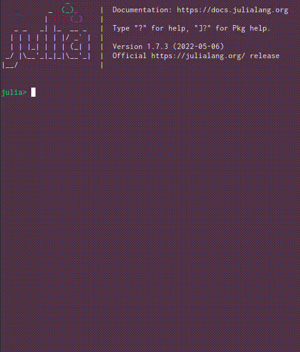

Kroki.jl
Enables a wide array of textual diagramming tools, such as Graphviz, Mermaid, PlantUML, svgbob and many more within Julia through the Kroki service.

The aim of the package is to make it straightforward to store descriptive diagrams close to, or even within, code. Additionally, it supports progressive enhancement of these diagrams in environments, e.g. Documenter.jl, Pluto.jl, or Jupyter, that support richer media types such as SVG or JPEG.

See the poster presented at JuliaCon 2020's poster session for more information and background.
Installation & Usage
Install Kroki through Julia's package manager
(v1.7) pkg> add KrokiConstruct diagrams using the Diagram type or any of the available string literals. Then either rely on the available Base.show overloads, or call the render function with a specific output format, to visualize them.
plantuml"""
Kroki -> Julia: Hello!
Julia -> Kroki: Hi!
Kroki -> Julia: Can I draw some diagrams for you?
Julia -> Kroki: Sure!
"""![](data:image/svg+xml;utf-8,<?xml version="1.0" encoding="UTF-8" standalone="no"?><svg xmlns="http://www.w3.org/2000/svg" xmlns:xlink="http://www.w3.org/1999/xlink" contentStyleType="text/css" height="210px" preserveAspectRatio="none" style="width:276px;height:210px;background:%23FFFFFF;" version="1.1" viewBox="0 0 276 210" width="276px" zoomAndPan="magnify"><defs/><g><line style="stroke:%23181818;stroke-width:0.5;stroke-dasharray:5.0,5.0;" x1="27" x2="27" y1="36.7999" y2="175.2"/><line style="stroke:%23181818;stroke-width:0.5;stroke-dasharray:5.0,5.0;" x1="248" x2="248" y1="36.7999" y2="175.2"/><rect fill="%23E2E2F0" height="30.7999" rx="2.5" ry="2.5" style="stroke:%23181818;stroke-width:0.5;" width="45" x="5" y="5"/><text fill="%23000000" font-family="sans-serif" font-size="14" lengthAdjust="spacing" textLength="31" x="12" y="25.9999">Kroki</text><rect fill="%23E2E2F0" height="30.7999" rx="2.5" ry="2.5" style="stroke:%23181818;stroke-width:0.5;" width="45" x="5" y="174.2"/><text fill="%23000000" font-family="sans-serif" font-size="14" lengthAdjust="spacing" textLength="31" x="12" y="195.1999">Kroki</text><rect fill="%23E2E2F0" height="30.7999" rx="2.5" ry="2.5" style="stroke:%23181818;stroke-width:0.5;" width="43" x="227" y="5"/><text fill="%23000000" font-family="sans-serif" font-size="14" lengthAdjust="spacing" textLength="29" x="234" y="25.9999">Julia</text><rect fill="%23E2E2F0" height="30.7999" rx="2.5" ry="2.5" style="stroke:%23181818;stroke-width:0.5;" width="43" x="227" y="174.2"/><text fill="%23000000" font-family="sans-serif" font-size="14" lengthAdjust="spacing" textLength="29" x="234" y="195.1999">Julia</text><polygon fill="%23181818" points="236.5,64.3999,246.5,68.3999,236.5,72.3999,240.5,68.3999" style="stroke:%23181818;stroke-width:1.0;"/><line style="stroke:%23181818;stroke-width:1.0;" x1="27.5" x2="242.5" y1="68.3999" y2="68.3999"/><text fill="%23000000" font-family="sans-serif" font-size="13" lengthAdjust="spacing" textLength="33" x="34.5" y="63.7999">Hello!</text><polygon fill="%23181818" points="38.5,94,28.5,98,38.5,102,34.5,98" style="stroke:%23181818;stroke-width:1.0;"/><line style="stroke:%23181818;stroke-width:1.0;" x1="32.5" x2="247.5" y1="98" y2="98"/><text fill="%23000000" font-family="sans-serif" font-size="13" lengthAdjust="spacing" textLength="16" x="44.5" y="93.4">Hi!</text><polygon fill="%23181818" points="236.5,123.6,246.5,127.6,236.5,131.6,240.5,127.6" style="stroke:%23181818;stroke-width:1.0;"/><line style="stroke:%23181818;stroke-width:1.0;" x1="27.5" x2="242.5" y1="127.6" y2="127.6"/><text fill="%23000000" font-family="sans-serif" font-size="13" lengthAdjust="spacing" textLength="197" x="34.5" y="123">Can I draw some diagrams for you?</text><polygon fill="%23181818" points="38.5,153.2,28.5,157.2,38.5,161.2,34.5,157.2" style="stroke:%23181818;stroke-width:1.0;"/><line style="stroke:%23181818;stroke-width:1.0;" x1="32.5" x2="247.5" y1="157.2" y2="157.2"/><text fill="%23000000" font-family="sans-serif" font-size="13" lengthAdjust="spacing" textLength="31" x="44.5" y="152.6">Sure!</text><!--MD5=[c50f7dc589c4fd514250ba5922127652]
@startuml
Kroki -> Julia: Hello!
Julia -> Kroki: Hi!
Kroki -> Julia: Can I draw some diagrams for you?
Julia -> Kroki: Sure!
@enduml
PlantUML version 1.2022.5(Sat Apr 30 10:55:52 GMT 2022)
(GPL source distribution)
Java Runtime: OpenJDK Runtime Environment
JVM: OpenJDK 64-Bit Server VM
Default Encoding: UTF-8
Language: en
Country: US
--></g></svg>)
See the examples section for more details and, well, examples.
The package can be configured to use the publicly hosted server at https://kroki.io or a self-hosted instance, see setEndpoint! for details. Facilities, e.g. start!, status, stop!, etc. are included to help with the self-hosting scenario, provided Docker Compose is available.